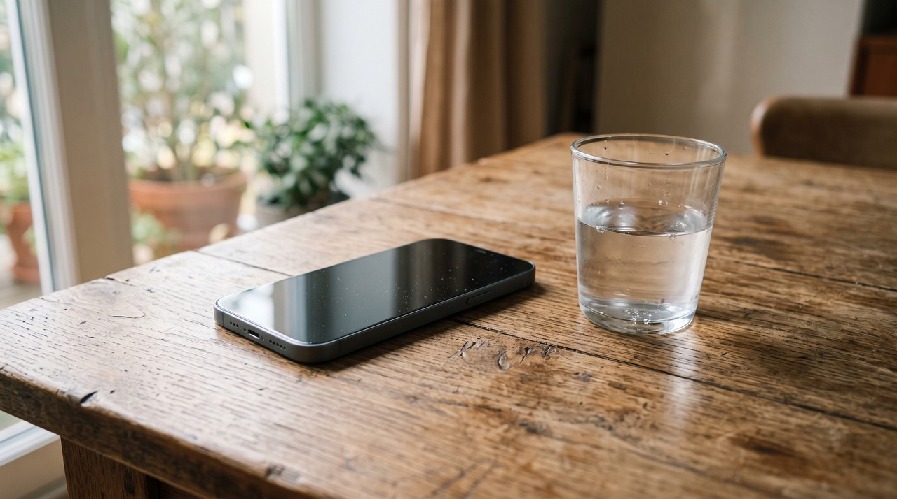
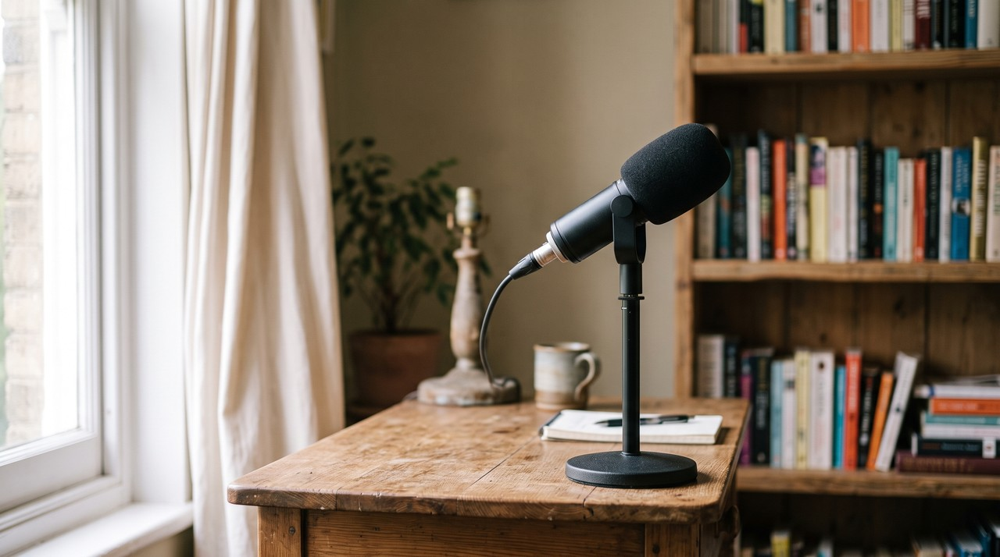

A 2026 listening study of 1,768 people showed that a reference machine detector stayed above 94.5 percent accuracy, and the people got 71.2 percent of cloned clips right. Detectors keep scores like that on voices they know, but they drop on voices they have never met. The bigger change since 2021 is that people now doubt genuine recordings. Our accuracy on real audio fell from 72.7 percent to 64.1 percent.
| Who or what is judging | Gets a cloned clip right | Gets a real clip right |
|---|---|---|
| People, 2021 baseline, 472 listeners | 72.9% | 72.7% |
| People, 2026 study, 1,768 listeners | 71.2% | 64.1% |
| Listeners, on commercial and language model voices, 2026 | 61.3 to 65.9% | not measured separately |
| Listeners, on older seq2seq and flow matching voices, 2026 | 75.4 to 76.8% | not measured separately |
| The 2026 study's reference machine detector | above 94.5% | above 94.5% |
By Inam. I build VoiceClone, a Windows app that clones a voice on your own machine, so I spend a lot of my week on the question below. My other engineering write ups are at designesh.com. Last updated 23 September 2026.
A voice note arrives from somebody you know and something about it sits wrong. Or you narrate a video in your own cloned voice and a comment says it is AI. Either way you end up asking if anything can actually tell a cloned voice from a real one.
There are two answers to this and they point in opposite directions. A machine detector is genuinely good and much better than your ears when it is tested on the kind of voices it was built for. But it gets shaky out in the world on a voice it has never met, especially when the audio is squeezed through a phone line or a video upload. The people selling detectors do not usually mention that part.
The part I want to focus on is what has happened to people. Researchers at Fraunhofer AISEC ran a large listening test in May 2026, and they collected 35,532 judgments from 1,768 people across 138 different voice systems. Human scores on fakes barely moved against a 2021 baseline, going from 72.9 percent down to 71.2 percent. But the score on real recordings fell from 72.7 percent to 64.1 percent. People have not got worse at hearing synthetic audio. People have just started disbelieving each other.
If you use your own cloned voice in something public, say it is AI made. Do not rely on being undetectable, because that is not a promise any tool can honestly make.
If you are worried about somebody cloning your voice to fool your bank or your family, do not count on a detector to save you. Agree a word only your family knows, and use it on any call about money.
How good are people at spotting a cloned voice?
People catch fakes about seven times in ten, which sounds better than it is. Two separate studies were run years apart by different teams, and they landed in nearly the same place. That agreement is the useful part because one study can be a quirk of its clips. Two studies with different data usually mean the finding is real.
The earlier one was published in PLOS ONE in August 2023 by Kimberly Mai and colleagues at UCL, under the title Warning: Humans cannot reliably detect speech deepfakes. They played real and synthetic audio to 529 people, and the listeners caught the fakes 73 percent of the time. Their accuracy across everything was 70.35 percent. It came out the same in English and in Mandarin, so this is not a quirk of one language.
The same study tried an obvious fix, and it barely helped. Warning people what to listen for, and playing them examples of synthetic speech first, improved the results only slightly. Scores did jump to 85.59 percent when people heard two clips of the same sentence and only had to pick which one was fake. But that is not a situation real life offers you because nobody hands you a genuine recording of the same words for comparison.
The 2026 Fraunhofer study put people at 71.2 percent on fakes, which is close enough to confirm the first study. It also showed which voices fool people most. Speech from commercial services and from the newer language model style systems was hardest to catch at 61.3 to 65.9 percent, while older seq2seq and flow matching systems stayed easier at 75.4 to 76.8 percent. Seq2seq just means the earlier generation of text to speech that mapped text straight onto sound. That older method left more of the mechanical edges that people pick up on.
I want to share one detail worth knowing before you trust your own ear. People who rated themselves as expert with computers scored roughly 4 percentage points higher than everybody else, and age and native language barely mattered at all. So being technical buys you almost nothing here. Thinking you would know is the wrong kind of confidence.
Why have people started calling real recordings fake?
This finding changed how I think about the whole subject. Across five years, human ability to spot a fake held roughly steady while the ability to accept something genuine dropped by more than 8 percentage points. The researchers called it a skepticism shift, meaning people just doubt more things now. Their title for the paper says the point better than a summary can, which is eroding trust in real speech.
It makes sense once you sit with it. You now know that cloned voices exist and are good, so every recording arrives carrying a small question mark. That doubt has to land somewhere. It lands on the real recordings because the real ones are most of what you hear.

There is a practical consequence for anybody who publishes audio. A genuine recording of your genuine voice now gets called fake about one time in three, so somebody doubting you is not evidence of anything. I have had it happen on my own videos where the narration was my own mouth into my own microphone. Somebody was still certain it was AI.
That cuts the other way too. If a person in your comments cannot reliably tell a fake, then a person in your comments also cannot clear you. Saying up front that a clip is AI made is the only move that actually settles it. This is why my own ethics line on the site is consent and disclosure rather than any claim about being detectable.
Do AI voice detectors actually work?
In a laboratory and on the kind of attack they were built for, detectors work well and clearly better than people. The reference machine detector in the 2026 study held above 94.5 percent accuracy across every condition they tested, against 71.2 percent for the humans. That gap is real and it is not small.
Now I will give you the honest part. Those numbers describe a detector meeting voices from a family it already knows. The generalisation problem is the gap between performing on test data and performing on something new, and it is the whole story of this field. The 2026 paper states plainly in its introduction that detectors achieve high accuracy on known attacks but often fail to generalise to unseen systems.
You can watch that happen in the field's own benchmark. ASVspoof is the long running academic challenge for spoofed and synthetic speech detection, and the abstract of its fifth edition puts it in one sentence. It says attacks significantly compromise the baseline systems, while submissions bring substantial improvements. I want you to read both halves of that. New attacks break the standard detectors, and teams who tune specifically for those attacks then do much better. Detection is a chase and the detector is always the one behind.
I want to mention one more thing you should know about that 94.5 percent, because it matters and because I would say it about a number in my own favour too. The first author of the 2026 study works at Fraunhofer AISEC and at Resemble AI, which is a company that sells both voice synthesis and voice detection. That does not make the number wrong, and the study is public and detailed. But a reference detector chosen by people with a commercial interest in detection is a best case. I read it as the ceiling rather than what you would get from a website you pasted a clip into.
You should treat any single detector result as a probability and not a verdict. If the answer actually matters, the number to ask a vendor for is not their accuracy. You should ask for their false positive rate, meaning how often they call a real recording fake. That is the error that damages an innocent person, and it is the one that gets advertised least.
Can a detector work in real time, on a live phone call?
This is the hardest version of the problem, and it is worth understanding why before you trust anything sold for it. A live detector has to decide from a short slice of audio while the call is still happening, and it has to do this after the audio has been squeezed through a phone codec. A codec is the compression that makes a call small enough to send over a network. It works by throwing away detail your ear is unlikely to miss.
That discarded detail is roughly the detail the detector was reading in the first place. So real time detection is fighting on three fronts at once, with less audio, less time, and a signal already stripped of its fine structure. It is not impossible and people are working on it, but it is the situation where the lab numbers travel worst.
This brings up the thing banks actually built, which is the voiceprint. They sold it with the line that your voice is your password. A reporter at Vice cloned their own voice and used it to get into their own bank account at Lloyds in the UK using a few minutes of their own audio. That is a journalist testing their own account with their own voice, so nothing about it was borderline. It demonstrated the thing cleanly.
Voice as a password was always a strange idea when you think about what a voice is. You use yours in public all day and anybody with a phone can record it. A password you broadcast constantly is not much of a password. For anyone who podcasts, streams or presents, there are hours of training material sitting online already.
What does a voice clone keep, and what does it throw away?
I can answer this part from the inside because I built a cloner. VoiceClone runs on GPT-SoVITS, and what a system like that learns from your sample is your timbre, your pronunciation habits and your rhythm. Timbre is the particular colour of your voice, which is the thing that makes you recognisable in one word.
What it never learns is your room. A real recording carries the size of the space you sat in, a chair creaking, traffic outside, the hiss of your own microphone, and the way your volume shifts as your head moves. A generated take has none of that because none of it was ever there. Its background is mathematically quiet, and it is quiet in the same way every single time since it comes out of a model instead of a physical room.
Breathing is the other difference. A model will put breath sounds where its training audio had them, so the breaths are copied rather than needed. A real person running out of air at the end of a long sentence is a physical event, and nothing in a generated take is short of air.
Those two things are a fair part of what detectors are reading. I mean the too clean background and the too regular fine detail left by the step that turns the model's output back into a waveform. This explains the fragility better than any benchmark can. Put a generated clip through a phone codec, a video platform's compression, or a room with an echo in it, and you have thrown away the evidence. Nobody has to be clever for that to happen because it happens to ordinary uploads by accident.
That is exactly why I do not build a claim about detection into my own product. My app puts no hidden marker in the audio it makes, and I am not going to pretend it does. A marker only survives if nothing downstream re-encodes the file, and something almost always does. Telling people to disclose is the honest answer, and inventing a technical guarantee I cannot keep would not be honest.
What should you do about it, in either direction?
Take the two situations separately because the useful advice is different.
If you are the one using a cloned voice, and it is your own voice or one you have clear permission for, then say so where it could matter. A line in the description is enough. The rules are also tightening, and disclosure requirements are worth knowing before they apply to you. I go through that in is voice cloning legal. None of that depends on whether anyone could have caught you.
If you are the one worried about being fooled, stop trying to judge by ear and change the test instead. Agree a word with your family that never goes online, and ask for it on any call about money or an emergency. A code word does not care how good the clone is. Then call the person back on the number you already have for them because a voice cannot tell you who is really holding the phone.
Be a bit gentler with recordings that are probably real. People now misjudge genuine audio more than a third of the time, so treating every odd sounding clip as a fake will make you wrong more often than it makes you safe. I tested my own clone on my own family and wrote up how that went in can people tell an AI voice. The surprises there ran in both directions.
FAQ
Can an AI voice detector tell if a voice is cloned?
Sometimes, and it is more reliable than a person. A reference detector in the 2026 Fraunhofer study stayed above 94.5 percent on the voices it was tested against, and people managed 71.2 percent. Accuracy falls on voice systems the detector has not seen before, so you should treat one result as a probability rather than a final verdict.
Can people tell the difference between a real and a cloned voice?
Not dependably, because two studies put people at roughly 71 to 73 percent on cloned clips. One was in 2023 with 529 listeners and the other was in 2026 with 1,768 people. Warning listeners in advance and giving them examples first improved the results only slightly.
Is it true that people now think real recordings are fake?
Yes, and it is the clearest change in the research. Between a 2021 baseline and the 2026 study, accuracy on genuine audio dropped from 72.7 percent to 64.1 percent while accuracy on fakes held steady. Listeners have not got worse at hearing synthesis, but they have got more suspicious of real speech.
How do I protect my family from a cloned voice scam?
You should agree a code word that never appears online, and ask for it on any call about money or an emergency. Then hang up and call the person back on a number you already had for them. A code word works no matter how convincing the voice is, and voice authentication at a bank has already been beaten in a published test.
Sources: the 2026 Fraunhofer AISEC listening study Eroding Trust in Real Speech by Nicolas M. Müller and Wei Herng Choong, the 2023 PLOS ONE paper Warning: Humans cannot reliably detect speech deepfakes by Kimberly Mai and colleagues at UCL, the ASVspoof challenge site and the ASVspoof 5 paper, and Vice's report on breaking into a bank account with an AI generated voice. I read all of them on 23 September 2026.
Hear your own voice come back.
The free Windows app clones and fully trains one voice, yours, on your own PC. No account, no upload, and the download starts right away.